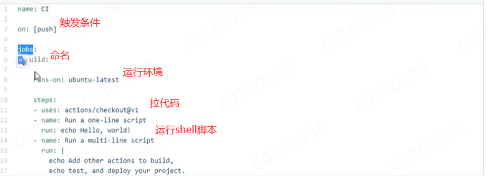
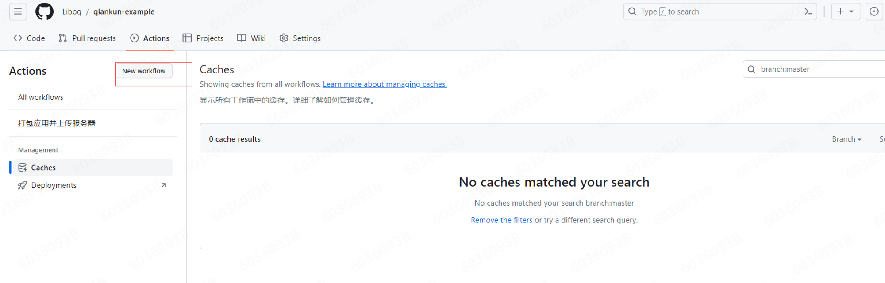
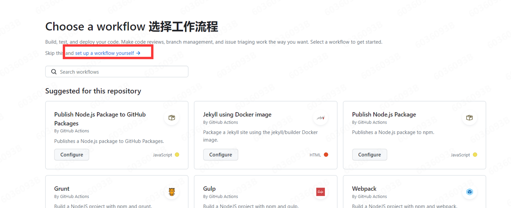
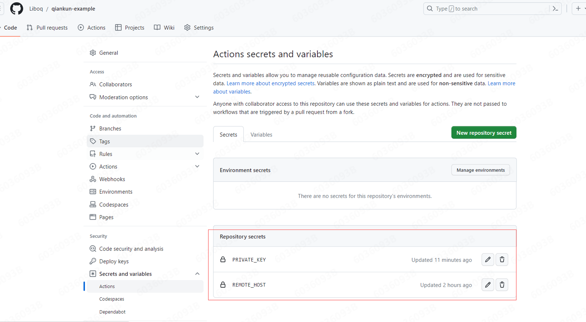
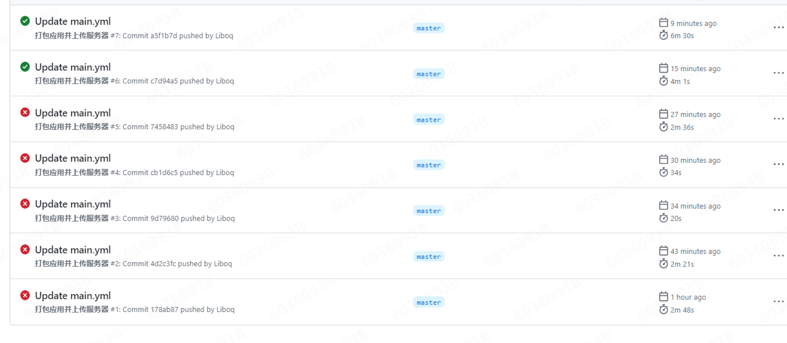

CICD
Workflow
工作流
流程
main.yml
了解 关键词的大概意思

github Action 实践
在项目的 Actions 中 点击 New workflow

选择一个工作流程，我是自己定义一个 workflow

yml 具体代码
name: 打包应用并上传服务器
on:
push:
branches:
- master
jobs:
build:
# runs-on 指定job任务运行所需要的虚拟机环境(必填字段)
runs-on: ubuntu-latest
steps:
# 获取源码
- name: 迁出代码
# 使用action库 actions/checkout获取源码
uses: actions/checkout@master
- name: 安装pnpm
uses: pnpm/action-setup@v2
with:
version: 8
# # 安装Node16
- name: 安装node.js
# # 使用action库 actions/setup-node安装node
uses: actions/setup-node@v2.5.1
with:
node-version: '16.x'
cache: 'pnpm' #缓存
# 安装依赖
- name: 安装依赖
run: pnpm install
# 打包
- name: 打包
run: pnpm build
# # 上传腾讯云
# - name: 发布到腾讯云
# uses: easingthemes/ssh-deploy@v2.1.1
# env:
# # 私钥
# SSH_PRIVATE_KEY: ${{ secrets.PRIVATE_KEY }}
# # scp参数
# ARGS: '-avzr --delete'
# # 服务器ip：换成你的服务器IP
# REMOTE_HOST: ${{ secrets.REMOTE_HOST }}
# # 用户
# REMOTE_USER: 'root'
# # 对应我们项目build的文件夹路径
# local_path: './dist/*'
# # 目标地址
# TARGET: '/www/wwwroot/qiankun-example'
# 利用action把dist好的文件上传到服务器/www/wwwroot/cms.panjingyi.top路径下,需要确认此目录已在服务端创建
- name: 发布到腾讯云
uses: wlixcc/SFTP-Deploy-Action@v1.0
with:
username: 'root' #ssh user name
server: '${{ secrets.REMOTE_HOST }}' #引用之前创建好的secret
ssh_private_key: ${{ secrets.PRIVATE_KEY }} #引用之前创建好的secret
local_path: './dist/*' # 对应我们项目build的文件夹路径
remote_path: '/www/wwwroot/qiankun-example'
REMOTE_HOST
PRIVATE_KEY
这两个字段先在 项目的 setting/Secrets and variables 中定义

success
